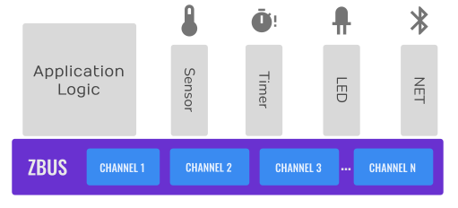
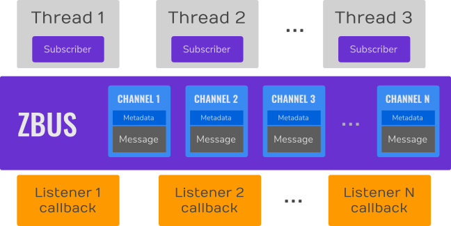
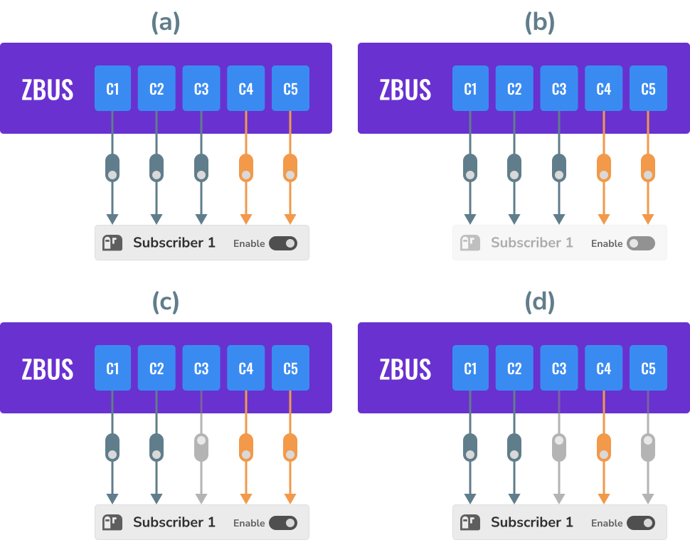
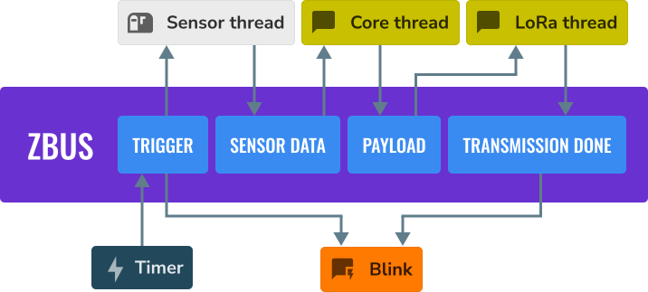
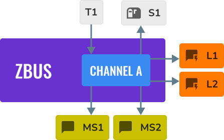
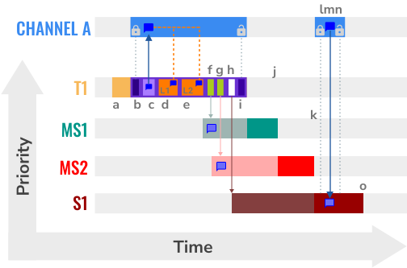
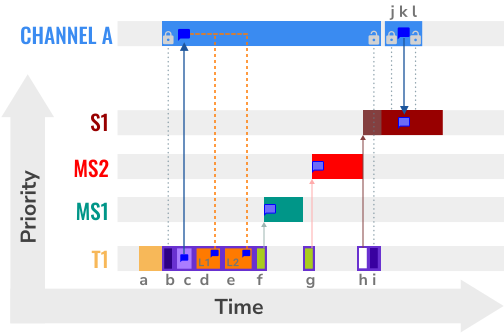
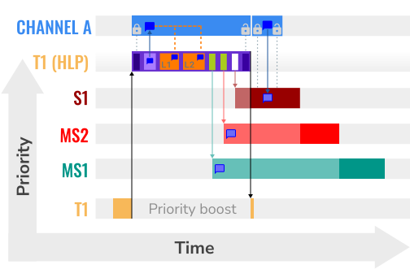
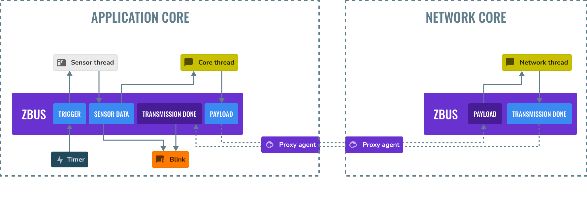

Zephyr 总线（zbus）
Zephyr bus - zbus（Zephyr 总线）是一种轻量、灵活的软件总线，为线程之间以多对多方式通信提供了一种简单的途径。
概念
线程可以使用 zbus 向一个或多个观察者发送消息，从而实现多对多通信。该总线实现了消息传递和发布/订阅两种通信范式，使线程能够通过共享内存进行同步或异步通信。
通过 zbus 的通信基于通道。线程（或回调）使用通道交换消息。此外，除其他操作外，线程还可以发布和观察通道。当线程在某个通道上发布消息时，总线会让该通道的所有观察者都能获得这条消息。根据观察者类型的不同，观察者可以直接访问消息、接收消息的副本，甚至只接收所发布通道的引用。
下图展示了一个使用 zbus 的典型应用程序示例，其中（与硬件无关的）应用逻辑通过软件总线与其他线程通信。注意，这些线程之间是解耦的，因为它们只使用 zbus 通道，彼此无需了解对方即可通信。


总线由以下部分组成：
一组通道，每个通道包含控制元数据信息和消息本身；
Virtual Distributed Event Dispatcher（VDED，虚拟分布式事件分发器），即负责向观察者发送通知/消息的总线逻辑。VDED 逻辑在发布操作内部、于同一线程上下文中运行，使总线具有分布式执行的特点。当线程向某个通道发布时，它也会把通知传播给观察者；
线程（订阅者和消息订阅者）、回调（监听者）以及异步监听者（推迟到工作队列中执行的回调），它们向总线发布、从总线读取并接收来自总线的通知。


总线在通道上提供发布（publish）、读取（read）、占用（claim）、结束（finish）、通知（notify）和订阅（subscribe）操作。发布、读取、占用和结束可在所有 RTOS 线程上下文和 ISR 中使用。发布和读取操作简单而快速：过程是先锁定通道，然后向共享内存区域复制或从中复制数据，最后解锁通道。zbus 另一个重要方面是观察者。观察者有四种类型：

监听者（Listener）：一个回调，每当被观察的通道被发布或通知时，事件分发器都会执行它；
异步监听者（Async Listener）：一个回调，每当被观察的通道被发布或通知时，事件分发器都会把它调度到工作队列（默认为系统工作队列）中执行；
订阅者（Subscriber）：一种基于线程的观察者，内部依赖一个消息队列，每当被观察的通道被发布或通知时，事件分发器都会把发生变化的通道的引用放入该队列。注意，这类观察者不接收消息本身，它应在收到通知后从通道中读取消息；
消息订阅者（Message subscriber）：一种基于线程的观察者，内部依赖一个 FIFO，每当被观察的通道被发布或通知时，事件分发器都会把消息的副本放入该 FIFO。
通道观察结构定义了通道与其观察者之间的关系。每一次观察都会创建一个通道/观察者对。开发者可以使用 ZBUS_CHAN_DEFINE 或 ZBUS_CHAN_ADD_OBS 静态分配观察关系。此外还有运行时观察者，开发者可以借此在运行时创建观察关系。可以完全禁用某个观察者，也可以单独禁用某些观察关系。事件分发器会忽略被禁用的观察者和观察关系。


上图展示了从 C1 到 C5 的通道、Subscriber 1 以及观察关系的几种状态，从 (a) 到 (d)。最后两个用橙色表示它们是动态分配的（运行时观察关系）。(a) 表示观察者和所有观察关系都已启用。(b) 表示观察者被禁用，因此事件分发器会忽略它。(c) 表示观察者已启用，但有一个静态观察关系被禁用，事件分发器只会停止发送来自通道 C3 的通知。在 (d) 中，事件分发器会停止把来自通道 C3 和 C5 的通知发送给 Subscriber 1。
为便于说明，假设下图是一个常见的基于传感器的方案。定时器触发时向 Trigger 通道发布。由于传感器线程订阅了 Trigger 通道，它会收到通知并获取传感器数据。注意，VDED 会执行 Blink，因为它也监听 Trigger 通道。传感器数据就绪后，传感器线程将其发布到 Sensor data 通道。核心线程作为 Sensor data 通道的消息订阅者收到消息，处理传感器数据并将其存入内部的样本缓冲区。如此重复，直到样本缓冲区写满；此时核心线程汇总样本缓冲区的信息，准备一个数据包，并将其发布到 Payload 通道。LoRa 线程是 Payload 通道的消息订阅者，因此会收到该数据包，并将有效载荷发送到云端。传输完成后，LoRa 线程向 Transmission done 通道发布。VDED 再次执行 Blink，因为它监听 Transmission done 通道。


以这种方式实现方案使应用程序更加灵活，让我们可以独立地修改各个部分。例如，我们想把触发源从定时器改为按键，这样做不会影响系统的其他部分。同样，如果想把通信接口从 LoRa 改为 Bluetooth，只需修改 LoRa 线程，无需做其他任何修改即可正常工作。开发者可以对图中的每个模块都这样做。由此可见，zbus 促进了系统架构的解耦。
使用 zbus 的另一个重要方面是系统模块的复用。如果一段行为定义明确的代码（我们称之为模块）只使用 zbus 通道而不使用硬件接口，它就可以很容易地在其他方案中复用。新方案必须实现该模块工作所需的接口（一组通道）。这表明 zbus 可以提高模块的复用性。
最后需要强调的是 zbus 的灵活性。zbus 提供了许多功能，让开发者可以自由地构建符合其特定需求的方案。这些功能包括：
消息可以动态分配，也可以静态分配
通知可以是同步的，也可以是异步的
可以通过占用通道以多种方式控制通道
可以使用 user-data 字段为通道添加自定义元数据
可以使用可选的验证器来确保消息格式正确
这些特性扩大了可以用 zbus 构建的方案范围，使其非常适合作为开源社区工具。
虚拟分布式事件分发器
VDED 总是在发布者的上下文中执行，发布者可以是线程或 ISR。在 ISR 中发布时要小心，因为调度器不会抢占 VDED。请谨慎使用。执行的基本过程如下：
获取通道锁；
通道通过直接复制（使用原始的
memcpy()）接收新消息；事件分发器逻辑按照观察者在通道观察者列表中出现的顺序，依次执行监听者、向消息订阅者发送消息副本，并把通道的引用推入订阅者的通知消息队列。由于通道仍处于锁定状态，监听者可以直接（通过
zbus_chan_const_msg()函数）以无复制的方式快速访问常量消息引用；最后，发布函数解锁通道。
为了说明 VDED 的执行过程，请看下面的示例。我们有四个线程，按优先级从低到高依次为 S1、MS2、MS1 和 T1（优先级最高）；两个监听者 L1 和 L2；以及通道 A。假设 L1、L2、MS1、MS2 和 S1 都观察通道 A。


以下代码实现了通道 A。注意 struct a_msg 仅用于说明。
ZBUS_CHAN_DEFINE(a_chan, /* Name */
struct a_msg, /* Message type */
NULL, /* Validator */
NULL, /* User Data */
ZBUS_OBSERVERS(L1, L2, MS1, MS2, S1), /* observers */
ZBUS_MSG_INIT(0) /* Initial value {0} */
);
在下图中，字母表示与 VDED 执行相关的某个动作。X 轴表示时间，Y 轴表示线程的优先级。通道 A 的消息用对话气泡表示，它只是一块内存（共享内存）。它出现多次只是为了表示该时刻的消息。


上图展示了 T1 向通道 A 发布时，VDED 执行期间所进行的动作。下表描述了 VDED 执行中的各项活动（用字母表示）。该场景的优先级为：T1 > MS1 > MS2 > S1。T1 的优先级最高。
下图展示了 T1 向通道 A 发布时，VDED 执行期间所进行的动作。该场景的优先级为：T1 < MS1 < MS2 < S1。


下表描述了 VDED 执行中的各项活动（用字母表示）。
HLP 优先级提升
ZBus 实现了最高锁定者协议（Highest Locker Protocol，HLP），它根据观察者线程的优先级来确定发布者的临时优先级。该协议考虑通道的最高观察者优先级（Highest Observer Priority，HOP）；即使观察者并未在该通道上等待消息，也会被纳入计算。VDED 会根据 HOP 提升发布者的优先级，以确保较低的延迟并尽量减少抢占。
备注
优先级提升默认启用。要停用它，请禁用 CONFIG_ZBUS_PRIORITY_BOOST 配置选项。
警告
ZBus 优先级提升在计算 HOP 时不考虑运行时观察者。
下图展示了 T1 向通道 A 发布时，VDED 执行期间所进行的动作。该场景考虑了优先级提升功能，优先级为：T1 < MS1 < MS2 < S1。


要正确使用优先级提升，需要把观察者附加到线程上。订阅者附加到线程后，就采用该线程的优先级，优先级提升算法会考虑该观察者的优先级。以下代码演示了附加线程的函数。
ZBUS_SUBSCRIBER_DEFINE(s1, 4);
void s1_thread(void *ptr1, void *ptr2, void *ptr3)
{
ARG_UNUSED(ptr1);
ARG_UNUSED(ptr2);
ARG_UNUSED(ptr3);
const struct zbus_channel *chan;
zbus_obs_attach_to_thread(&s1);
while (1) {
zbus_sub_wait(&s1, &chan, K_FOREVER);
/* Subscriber implementation */
}
}
K_THREAD_DEFINE(s1_id, CONFIG_MAIN_STACK_SIZE, s1_thread, NULL, NULL, NULL, 2, 0, 0);
在上面的代码中，由于线程的优先级为 2，zbus_obs_attach_to_thread() 会把观察者 s1 的优先级设为 2。可以使用 zbus_obs_detach_from_thread() 分离观察者来撤销这一设置。计算通道 HOP 时只考虑已启用的观察者和观察关系。屏蔽通道的某个特定观察关系会影响该通道的 HOP。
总之，该功能的优点如下：
对 zbus 而言，HLP 比互斥量的优先级继承更有效；
发布者与观察者之间不会发生有界的优先级反转；
优先级介于 T1 和 S1 之间、且不参与通信的其他线程无法抢占 T1，从而避免了无界的优先级反转；
消息订阅者会等待 VDED 完成消息投递过程，因此 VDED 的执行更快、更稳定；
HLP 优先级是动态的，可以在执行过程中变化；
ZBus 操作可以在 ISR 中使用；
可以关闭优先级提升功能，改用普通信号量作为通道锁机制；
最高锁定者协议的主要缺点是与继承相关的优先级反转，但在 zbus 场景中这是可以接受的，因为它能确保较低的总线延迟。
限制
由于开发者可以用 zbus 解决许多不同的问题，也就带来了一些挑战。ZBus 并不能解决所有问题，因此需要分析具体情况，确认 zbus 是否适用。例如，根据 zbus 的基准测试结果，它不太适合在线程之间传输高速字节流。管道 内核对象可以满足这类需求。
投递保证
ZBus 总是会把消息投递给监听者、消息订阅者和异步监听者。但对于订阅者，消息投递没有保证，因为 zbus 只发送通知，而消息的读取取决于订阅者的实现。遵循以下设计建议可以提高投递率：
让监听者尽可能快（像对待 ISR 一样对待它们）。如果需要耗时的处理，可以考虑使用异步监听者把部分或全部处理转移到工作队列中。
尽量给消费者设置较高的优先级，以避免丢失。
为观察者留出空闲的 CPU 来处理生成的数据。
对于大量字节传输，可以考虑使用消息队列或管道。
警告
ZBus 使用 include/zephyr/net_buf.h（网络缓冲区）与消息订阅者交换数据。因此，考虑到消息订阅者和异步监听者，请谨慎选择 CONFIG_ZBUS_MSG_SUBSCRIBER_NET_BUF_POOL_SIZE 和 CONFIG_HEAP_MEM_POOL_ADD_SIZE_ZBUS 这两个配置，它们对 VDED 的正确执行（投递保证）至关重要。如果想为一组特定的通道保留一个隔离的池，可以使用 CONFIG_ZBUS_MSG_SUBSCRIBER_NET_BUF_POOL_ISOLATION 和专用的池。请参阅 Message subscriber 和 zbus Async Listeners，了解隔离的实际效果。
警告
订阅者只会收到发生变化的通道的引用。如果在订阅者读取之前通道被发布了两次，就可能出现数据丢失：第二次发布会覆盖第一次的值。因此，订阅者会收到两次通知，但只能读到最后的数据。
消息投递顺序
消息投递按以下优先顺序进行：
使用
ZBUS_CHAN_DEFINE在通道中定义的观察者（按定义顺序）；使用
ZBUS_CHAN_ADD_OBS定义的观察者（按顺序优先级，即该宏的参数）；最后是使用
zbus_chan_add_obs()按添加顺序加入的运行时观察者。
备注
VDED 会忽略所有被禁用的观察者或观察关系。
用法
ZBus 的运行依赖于通道和观察者。因此，在定义通道时需要确定通道的消息及其观察者列表，观察者可以静态指定（在通道定义中，或使用 ZBUS_CHAN_ADD_OBS），也可以在运行时指定（参见 runtime observers）。消息是一个普通的 C 结构体；观察者可以是监听者（同步）、异步监听者（异步）、订阅者（异步）或消息订阅者（异步）。
以下代码定义并初始化了一个普通通道及其依赖项。例如，该通道用于交换加速度计数据。
struct acc_msg {
int x;
int y;
int z;
};
ZBUS_CHAN_DEFINE(acc_chan, /* Name */
struct acc_msg, /* Message type */
NULL, /* Validator */
NULL, /* User Data */
ZBUS_OBSERVERS(my_listener, my_subscriber,
my_msg_subscriber), /* observers */
ZBUS_MSG_INIT(.x = 0, .y = 0, .z = 0) /* Initial value */
);
void listener_callback_example(const struct zbus_channel *chan)
{
const struct acc_msg *acc;
if (&acc_chan == chan) {
acc = zbus_chan_const_msg(chan); // Direct message access
LOG_DBG("From listener -> Acc x=%d, y=%d, z=%d", acc->x, acc->y, acc->z);
}
}
ZBUS_LISTENER_DEFINE(my_listener, listener_callback_example);
ZBUS_LISTENER_DEFINE(my_listener2, listener_callback_example);
ZBUS_CHAN_ADD_OBS(acc_chan, my_listener2, 3);
ZBUS_SUBSCRIBER_DEFINE(my_subscriber, 4);
void subscriber_task(void)
{
const struct zbus_channel *chan;
while (!zbus_sub_wait(&my_subscriber, &chan, K_FOREVER)) {
struct acc_msg acc = {0};
if (&acc_chan == chan) {
// Indirect message access
zbus_chan_read(&acc_chan, &acc, K_NO_WAIT);
LOG_DBG("From subscriber -> Acc x=%d, y=%d, z=%d", acc.x, acc.y, acc.z);
}
}
}
K_THREAD_DEFINE(subscriber_task_id, 512, subscriber_task, NULL, NULL, NULL, 3, 0, 0);
ZBUS_MSG_SUBSCRIBER_DEFINE(my_msg_subscriber);
static void msg_subscriber_task(void *ptr1, void *ptr2, void *ptr3)
{
ARG_UNUSED(ptr1);
ARG_UNUSED(ptr2);
ARG_UNUSED(ptr3);
const struct zbus_channel *chan;
struct acc_msg acc = {0};
while (!zbus_sub_wait_msg(&my_msg_subscriber, &chan, &acc, K_FOREVER)) {
if (&acc_chan == chan) {
LOG_INF("From msg subscriber -> Acc x=%d, y=%d, z=%d", acc.x, acc.y, acc.z);
}
}
}
K_THREAD_DEFINE(msg_subscriber_task_id, 1024, msg_subscriber_task, NULL, NULL, NULL, 3, 0, 0);
可以使用 ZBUS_CHAN_ADD_OBS 向通道添加静态观察者，我们称之为定义后的静态观察者。该命令允许我们指定一个初始化优先级，它会影响观察者的初始化顺序。顺序优先级参数只影响定义后的静态观察者。静态观察者的消息投递顺序无法被覆盖。
备注
在监听者内部访问消息之前，无需占用/锁定通道，因为事件分发器调用监听者时，发出通知的通道已经处于锁定状态。但订阅者在收到通知后，必须占用/锁定通道，或使用常规的读操作来访问消息。
通道可以有一个 验证函数（validator function），使通道只接受有效的消息。被硬通道判定为无效的发布尝试会立即返回错误码。这样，通道的原始创建者可以对其他想借用其通道的开发者/发布者施加一定的约束。以下代码定义并初始化了一个 hard channel （硬通道）及其依赖项。只有有效的消息才能发布到 hard channel。之所以能做到这一点，是因为在通道定义中传入了一个 验证函数。在本例中，只有 move 等于 0、-1 和 1 的消息才有效。发布函数会丢弃 move 为其他值的消息。
struct control_msg {
int move;
};
bool control_validator(const void* msg, size_t msg_size) {
const struct control_msg* cm = msg;
bool is_valid = (cm->move == -1) || (cm->move == 0) || (cm->move == 1);
return is_valid;
}
static int message_count = 0;
ZBUS_CHAN_DEFINE(control_chan, /* Name */
struct control_msg, /* Message type */
control_validator, /* Validator */
&message_count, /* User data */
ZBUS_OBSERVERS_EMPTY, /* observers */
ZBUS_MSG_INIT(.move = 0) /* Initial value */
);
以下各节详细介绍如何使用 zbus 的各项功能。
向通道发布
在 zbus 中，通过调用 zbus_chan_pub() 向通道发布消息。例如，以下代码在上面示例的基础上向通道 acc_chan 发布。该代码尝试将消息 acc1 发布到通道 acc_chan，最多等待一秒钟完成发布，否则操作失败。从代码示例可以看出，使用在栈上分配的消息是可以的，因为 VDED 会在内部复制数据。
struct acc_msg acc1 = {.x = 1, .y = 1, .z = 1};
zbus_chan_pub(&acc_chan, &acc1, K_SECONDS(1));
警告
在 ISR 中只能以 K_NO_WAIT 超时使用此函数。
从通道读取
在 zbus 中，通过调用 zbus_chan_read() 从通道读取消息。例如，以下代码尝试读取通道 acc_chan，最多等待 500 毫秒读取消息，否则操作失败。
struct acc_msg acc = {0};
zbus_chan_read(&acc_chan, &acc, K_MSEC(500));
警告
在 ISR 中只能以 K_NO_WAIT 超时使用此函数。
警告
在收到来自 zbus_sub_wait() 的通知后，请谨慎选择 zbus_chan_read() 的超时，因为在 VDED 执行期间通道总是不可用的。如果有多个订阅者，使用 K_NO_WAIT 读取很可能返回超时错误。例如，再看一下 VDED 的示意图，注意 S1 使用 K_NO_WAIT 的读取尝试必然会失败。更多详情请参阅 Virtual Distributed Event Dispatcher 一节。
通知通道
可以调用 zbus_chan_notify() 强制 zbus 通知通道的观察者。例如，以下代码在上面示例的基础上，对通道 acc_chan 强制发出一次通知。注意，这可以发送不带消息的事件，不需要任何数据交换。Claim and finish a channel 一节中的代码示例展示了这种用法可能有用的场景。
zbus_chan_notify(&acc_chan, K_NO_WAIT);
警告
在 ISR 中只能以 K_NO_WAIT 超时使用此函数。
声明通道和观察者
要在定义通道或观察者的文件之外访问它们，需要调用 ZBUS_CHAN_DECLARE 和 ZBUS_OBS_DECLARE 进行声明。换言之，不同文件中同名的 zbus 通道定义和声明会指向同一个（全局）通道。因此，开发者在为新通道命名时应注意已有的通道，否则链接会失败。可以在一次调用中声明多个通道或观察者。以下代码在上面示例的基础上展示了已定义的通道和观察者。
ZBUS_OBS_DECLARE(my_listener, my_subscriber);
ZBUS_CHAN_DECLARE(acc_chan, version_chan);
唯一通道标识符
为了简化与外部实体的集成，可以为通道分配一个唯一的数字标识符。这样用户就可以通过 zbus_chan_from_id() 使用该标识符获取通道引用，而不必在编译时通过 ZBUS_CHAN_DECLARE 获取。使用此功能的通道通过 ZBUS_CHAN_DEFINE_WITH_ID 声明。
ZBUS_CHAN_DEFINE_WITH_ID(control_chan, /* Name */
0x12345678, /* Unique channel identifier */
struct control_msg, /* Message type */
control_validator, /* Validator */
&message_count, /* User data */
ZBUS_OBSERVERS_EMPTY, /* observers */
ZBUS_MSG_INIT(.move = 0) /* Initial value */
);
static void channel_retrieve(void)
{
const struct zbus_channel *chan = zbus_chan_from_id(0x12345678);
...
}
运行时创建通道
启用 CONFIG_ZBUS_RUNTIME_CHANNEL_REGISTRATION 后，ZBus 允许在运行时创建通道。这在编译时不知道通道数量或其配置的场景中很有用。以下代码演示了如何在运行时创建通道。注意，传给 zbus_runtime_channel_register() 的 zbus_runtime_channel、zbus_channel_data 以及消息结构体，在调用 zbus_runtime_channel_unregister() 之前必须一直在内存中有效。
struct runtime_msg {
int data;
};
void create_runtime_channel(void)
{
struct zbus_runtime_channel runtime_chan;
struct zbus_channel_data data;
struct runtime_msg msg = {0};
int ret;
/* Initialise and register the runtime channel */
zbus_runtime_channel_init(&runtime_chan, &data, "chan", 0x12345678, NULL, &msg,
sizeof(msg), NULL);
ret = zbus_runtime_channel_register(&runtime_chan);
if (ret < 0) {
LOG_ERR("Failed to register runtime channel (%d)", ret);
return;
}
/* Use the runtime channel here */
struct runtime_msg pub_data = {42};
zbus_chan_pub(&runtime_chan.channel, &pub_data, K_MSEC(100));
...
/* Unregister the runtime channel when done */
zbus_runtime_channel_unregister(&runtime_chan);
}
遍历通道和观察者
ZBus 子系统还为通道和观察者实现了 可迭代段，并提供了相应的 API，例如 zbus_iterate_over_channels()、zbus_iterate_over_channels_with_user_data()、zbus_iterate_over_observers() 和 zbus_iterate_over_observers_with_user_data()。借助此功能，开发者可以对所有已声明的通道调用某个过程，该过程的参数是一个 zbus_channel。执行顺序按通道名称的字母顺序（详情请参阅 可迭代段 文档）。ZBus 也为 zbus_observer 实现了此功能。
static bool print_channel_data_iterator(const struct zbus_channel *chan, void *user_data)
{
int *count = user_data;
LOG_INF("%d - Channel %s:", *count, zbus_chan_name(chan));
LOG_INF(" Message size: %d", zbus_chan_msg_size(chan));
LOG_INF(" Observers:");
++(*count);
struct zbus_channel_observation *observation;
for (int16_t i = *chan->observers_start_idx, limit = *chan->observers_end_idx; i < limit;
++i) {
STRUCT_SECTION_GET(zbus_channel_observation, i, &observation);
LOG_INF(" - %s", observation->obs->name);
}
struct zbus_observer_node *obs_nd, *tmp;
SYS_SLIST_FOR_EACH_CONTAINER_SAFE(chan->observers, obs_nd, tmp, node) {
LOG_INF(" - %s", obs_nd->obs->name);
}
return true;
}
static bool print_observer_data_iterator(const struct zbus_observer *obs, void *user_data)
{
int *count = user_data;
LOG_INF("%d - %s %s", *count, obs->queue ? "Subscriber" : "Listener", zbus_obs_name(obs));
++(*count);
return true;
}
int main(void)
{
int count = 0;
LOG_INF("Channel list:");
zbus_iterate_over_channels_with_user_data(print_channel_data_iterator, &count);
count = 0;
LOG_INF("Observers list:");
zbus_iterate_over_observers_with_user_data(print_observer_data_iterator, &count);
return 0;
}
该代码会输出以下日志：
D: Channel list:
D: 0 - Channel acc_chan:
D: Message size: 12
D: Observers:
D: - my_listener
D: - my_subscriber
D: 1 - Channel version_chan:
D: Message size: 4
D: Observers:
D: Observers list:
D: 0 - Listener my_listener
D: 1 - Subscriber my_subscriber
高级通道控制
ZBus 的设计目标是尽可能灵活和可扩展。因此，它提供了一些功能，用于对总线进行一定的控制和扩展。
监听者访问消息
出于性能考虑，监听者可以直接访问接收通道的消息，因为通道已经为它们锁定了。要访问通道的消息，监听者应使用 zbus_chan_const_msg()，因为作为参数传给监听者函数的通道是一个指向该通道的常量指针。常量指针返回类型告诉开发者不要修改消息。
void listener_callback_example(const struct zbus_channel *chan)
{
const struct acc_msg *acc;
if (&acc_chan == chan) {
acc = zbus_chan_const_msg(chan); // Use this
// instead of zbus_chan_read(chan, &acc, K_MSEC(200))
// or zbus_chan_msg(chan)
LOG_DBG("From listener -> Acc x=%d, y=%d, z=%d", acc->x, acc->y, acc->z);
}
}
异步监听者访问消息
异步监听者是利用现有的消息订阅者基础设施实现的。它们在工作队列上下文中执行，而不是在发布者的上下文中执行。使用系统工作队列时，用户感受到的行为与普通监听者相似。由于系统工作队列默认是优先级为 -1 的协作式线程，异步监听者会在 VDED 执行之后、先于所有其他应用程序线程（通常是抢占式线程）运行。
异步监听者可以通过传给回调的消息副本引用直接访问接收通道的消息。注意，消息副本在异步监听者执行完毕后立即被释放。要访问通道的消息，异步监听者只需将其强制转换为正确的常量消息格式。以下示例演示了如何在异步监听者中访问消息。
static void async_listener_callback(const struct zbus_channel *chan, const void *message)
{
if (chan != &chan_event) {
LOG_ERR("Unexpected channel");
return;
}
const struct msg_event *msg = message;
LOG_INF("From async listener -> Evt=%d | %s", msg->type,
k_thread_name_get(k_current_get()));
}
用户数据
可以把自定义数据传入通道的 user_data，用于各种目的，例如写入通道元数据。为此，可以向通道定义宏的 user_data 字段传入一个指针，之后其他人就可以访问它。注意，每个通道的 user_data 是独立的。另外，访问 user_data 不是线程安全的。关于线程安全地访问 user_data，请参阅下一节。
占用和结束通道
为了更好地控制通道，新增了两个函数：zbus_chan_claim() 和 zbus_chan_finish()。借助这两个函数，可以安全地访问通道的元数据。通道被占用期间，该通道上的任何操作都不可用。结束对通道的占用后，所有操作恢复可用。
警告
切勿直接修改通道结构体的字段，否则可能导致 zbus 行为不一致和调度问题。
警告
在 ISR 中只能以 K_NO_WAIT 超时使用此函数。
以下代码在上面示例的基础上占用 acc_chan，以设置通道的 user_data。假设我们想统计通道交换消息的次数。我们将 user_data 定义为一个 32 位整数。这段代码可以加入到上面描述的监听者代码中。
if (!zbus_chan_claim(&acc_chan, K_MSEC(200))) {
int *message_counting = (int *) zbus_chan_user_data(&acc_chan);
*message_counting += 1;
zbus_chan_finish(&acc_chan);
}
以下代码的行为与 向通道发布 中的代码完全相同。
if (!zbus_chan_claim(&acc_chan, K_MSEC(200))) {
struct acc_msg *acc1 = (struct acc_msg *) zbus_chan_msg(&acc_chan);
acc1->x = 1;
acc1->y = 1;
acc1->z = 1;
zbus_chan_finish(&acc_chan);
zbus_chan_notify(&acc_chan, K_SECONDS(1));
}
以下代码的行为与 从通道读取 中的代码完全相同。
if (!zbus_chan_claim(&acc_chan, K_MSEC(200))) {
const struct acc_msg *acc1 = (const struct acc_msg *) zbus_chan_const_msg(&acc_chan);
// access the acc_msg fields directly.
zbus_chan_finish(&acc_chan);
}
运行时注册观察者
可以在运行时向通道添加观察者。设置 CONFIG_ZBUS_RUNTIME_OBSERVERS 即可启用此功能。该功能可以使用堆动态分配节点，使用内存块（slab）静态分配节点，或使用用户提供的节点。这取决于 CONFIG_ZBUS_RUNTIME_OBSERVERS_NODE_ALLOC，其取值可以是 CONFIG_ZBUS_RUNTIME_OBSERVERS_NODE_ALLOC_DYNAMIC、CONFIG_ZBUS_RUNTIME_OBSERVERS_NODE_ALLOC_STATIC 和 CONFIG_ZBUS_RUNTIME_OBSERVERS_NODE_ALLOC_NONE，默认为动态分配。启用 CONFIG_ZBUS_RUNTIME_OBSERVERS_NODE_ALLOC_STATIC 时，需要通过 CONFIG_ZBUS_RUNTIME_OBSERVERS_NODE_POOL_SIZE 配置设置要使用的运行时观察者数量。以下示例展示了运行时注册的用法。
ZBUS_LISTENER_DEFINE(my_listener, callback);
// ...
void thread_entry(void) {
// ...
/* Adding the observer to channel chan1 */
zbus_chan_add_obs(&chan1, &my_listener, K_NO_WAIT);
/* Removing the observer from channel chan1 */
zbus_chan_rm_obs(&chan1, &my_listener, K_NO_WAIT);
}
警告
zbus_observer_node 只有在通过 zbus_chan_rm_obs() 移除其最初关联的通道观察者之后，才能在 zbus_chan_add_obs_with_node() 中重复使用。
代理通信（实验性）
警告
代理通信是实验性功能，可能会在不经弃用流程的情况下发生变化。
ZBus 支持代理转发，可以在不同的执行域（例如 CPU 内核或独立设备）之间传递消息。


概念
代理通信引入了以下几个关键概念：
影子通道（Shadow channels）：镜像其他域中通道的只读通道
代理（Proxy agents）：在域之间同步通道数据的后台服务
传输后端（Transport backends）：代理所使用的通信机制
在代码中使用 ZBUS_PROXY_AGENT_DEFINE 设置代理，并指定传输后端和配置参数。通道使用标准的 zbus 宏（ZBUS_CHAN_DEFINE 或 ZBUS_CHAN_DEFINE_WITH_ID）定义，影子通道则使用 ZBUS_SHADOW_CHAN_DEFINE 创建与特定代理关联的只读镜像。
传输后端
ZBus 代理通信依靠传输后端在不同的执行域之间转发消息。
IPC 后端
IPC 后端使用进程间通信机制，在同一系统内的 CPU 内核之间转发消息。
完整的实现请参阅 zbus Proxy agent - IPC 示例。
用法
启用
CONFIG_ZBUS_PROXY_AGENT以及所需的后端选项。在设备树中提供后端设备。
实例化代理：
#include <zephyr/zbus/proxy_agent/zbus_proxy_agent.h>
#include <zephyr/zbus/proxy_agent/zbus_proxy_agent_ipc.h>
#define IPC_DEV_NODE DT_NODELABEL(ipc0)
ZBUS_PROXY_AGENT_DEFINE(proxy_agent, /* Proxy agent name */
ZBUS_PROXY_AGENT_BACKEND_IPC, /* Proxy agent type */
IPC_DEV_NODE /* Backend node */
);
其中：
"proxy_agent"：代理实例的名称
"ZBUS_PROXY_AGENT_BACKEND_IPC"：传输后端类型（本例中为 IPC）
"IPC_DEV_NODE"：后端设备的设备树节点
通过代理转发本地通道：
ZBUS_CHAN_DEFINE(my_channel, struct my_msg, NULL, NULL,
ZBUS_OBSERVERS_EMPTY, ZBUS_MSG_INIT(0));
ZBUS_PROXY_ADD_CHAN(proxy_agent, my_channel);
zbus_chan_pub(&my_channel, &msg, K_MSEC(100));
发布到 "my_channel" 的任何消息都会被 "proxy_agent" 转发到远程域。
使用影子通道镜像远程通道：
ZBUS_SHADOW_CHAN_DEFINE(my_channel_shadow, struct my_msg,
proxy_agent, NULL, ZBUS_OBSERVERS_EMPTY,
ZBUS_MSG_INIT(0));
影子通道可以像普通通道一样使用，但它是只读的。例如，添加一个监听者：
void my_listener_cb(const struct zbus_channel *chan)
{
const struct my_msg *data = zbus_chan_const_msg(chan);
printk("Received: %d\n", data->data);
}
ZBUS_LISTENER_DEFINE(my_listener, my_listener_cb);
ZBUS_CHAN_ADD_OBS(my_channel_shadow, my_listener, 0);
示例
要全面了解 zbus 的用法，请查看示例。目前提供以下示例：
zbus Hello World 展示了上面所用代码的实际运行；
Work queue 展示了如何定义和使用不同类型的观察者。注意其中有一个示例，作为一种执行方式，使用工作队列代替直接执行监听者；
Message subscriber 展示了如何使用消息订阅者；
zbus Async Listeners 展示了如何使用异步监听者；
Dynamic channel 演示了如何在 zbus 中使用动态分配的数据进行交换；
UART bridge 展示了一个通过串口把通道的操作发送到主机的示例；
Remote mock sample 展示了如何实现一个外部模拟器（mock，运行在主机上），用于向总线发送消息和从总线接收消息；
zbus Priority Boost 通过一个优先级反转场景展示了 zbus 的优先级提升功能；
Runtime observer registration 展示了一种使用运行时观察者注册功能的方法；
Confirmed channel 实现了一种只使用订阅者来实现确认通道的方法；
Benchmarking 实现了一个使用不同输入组合的基准测试。
zbus Proxy agent - IPC 演示了使用 IPC 代理进行多核通信；
建议用法
使用 zbus 在线程之间以一对一、一对多和多对多的方式同步或异步地传输数据（消息）。选择合适的观察者类型至关重要。对于能够容忍消息丢失和重复的场景，使用订阅者；如果不能容忍，则使用消息订阅者（如果需要线程）或监听者（如果需要精简和快速）。除监听者外，可能还需要另一种异步消息处理机制（例如 消息队列）来保存待处理的消息，直到其被处理。
对于代理场景，使用 zbus 实现跨执行边界的通信：
多核系统：使用 IPC 后端代理在应用处理器和网络处理器之间进行协调，或在多个 CPU 内核之间分配工作负载。
备注
ZBus 可以用于从生产者向消费者传输数据流。但这可能增加 zbus 的通信延迟。因此，对于这种通信拓扑，不妨考虑把管道作为一个不错的替代方案。
配置选项
要启用 zbus，需要启用 CONFIG_ZBUS 选项。
相关配置选项：
CONFIG_ZBUS_PRIORITY_BOOST：zbus 的最高锁定者协议实现；CONFIG_ZBUS_CHANNELS_SYS_INIT_PRIORITY：确定 zbus 按通道组织通道观察关系时所用的SYS_INIT优先级；CONFIG_ZBUS_CHANNEL_NAME：使通道名称在通道元数据中可用。日志使用这一信息显示通道名称；CONFIG_ZBUS_OBSERVER_NAME：使观察者名称在通道元数据中可用；CONFIG_ZBUS_PREFER_DYNAMIC_ALLOCATION：让 zbus 在内部使用动态分配。用户可以禁用它并在之后进行调整；CONFIG_ZBUS_MSG_SUBSCRIBER：启用消息订阅者这一观察者类型；CONFIG_ZBUS_MSG_SUBSCRIBER_BUF_ALLOC_DYNAMIC：使用堆分配消息缓冲区；CONFIG_ZBUS_MSG_SUBSCRIBER_BUF_ALLOC_STATIC：使用栈分配消息缓冲区；CONFIG_ZBUS_MSG_SUBSCRIBER_NET_BUF_POOL_SIZE：可同时使用的消息缓冲区数量；CONFIG_ZBUS_MSG_SUBSCRIBER_NET_BUF_POOL_ISOLATION：允许开发者为一组通道的消息订阅者隔离出一个池；只有在对某个通道调用zbus_chan_set_msg_sub_pool()之后，该通道才会切换到专用池；CONFIG_ZBUS_MSG_SUBSCRIBER_NET_BUF_STATIC_DATA_SIZE：要放入消息缓冲区传输的 zbus 通道中最大的消息大小；CONFIG_HEAP_MEM_POOL_ADD_SIZE_ZBUS：为 ZBus 整体保留的堆大小，包括消息缓冲区分配；CONFIG_ZBUS_ASYNC_LISTENER：启用异步监听者这一观察者类型；CONFIG_ZBUS_RUNTIME_OBSERVERS：启用运行时观察者注册；CONFIG_ZBUS_RUNTIME_OBSERVERS_NODE_ALLOC_DYNAMIC：使用堆动态分配运行时观察者；CONFIG_ZBUS_RUNTIME_OBSERVERS_NODE_ALLOC_STATIC：使用内存块（slab）静态分配运行时观察者；CONFIG_ZBUS_RUNTIME_OBSERVERS_NODE_POOL_SIZE：要静态分配的已启用运行时观察者数量；CONFIG_ZBUS_RUNTIME_OBSERVERS_NODE_ALLOC_NONE：使用用户提供的运行时观察者节点；CONFIG_ZBUS_PROXY_AGENT：启用代理通信支持。
代理配置选项
CONFIG_ZBUS_PROXY_AGENT_LOG_LEVEL：代理通信的日志级别；CONFIG_ZBUS_PROXY_AGENT_IPC：为代理通信启用 IPC 后端；CONFIG_ZBUS_PROXY_AGENT_IPC_LOG_LEVEL：IPC 后端代理通信的日志级别；CONFIG_ZBUS_PROXY_AGENT_MAX_MESSAGE_SIZE：代理通道的最大消息大小；CONFIG_ZBUS_PROXY_AGENT_MAX_CHANNEL_NAME_SIZE：代理通信中通道名称的最大长度；CONFIG_ZBUS_PROXY_AGENT_INIT_PRIORITY：代理设置的初始化优先级。CONFIG_ZBUS_PROXY_AGENT_WORK_QUEUE_STACK_SIZE：代理接收工作队列线程的栈大小；CONFIG_ZBUS_PROXY_AGENT_WORK_QUEUE_PRIORITY：代理接收工作队列线程的优先级。CONFIG_ZBUS_PROXY_AGENT_RX_QUEUE_DEPTH：代理接收队列的深度，用于接收来自远程域的消息。
API 参考
- zbus_apis